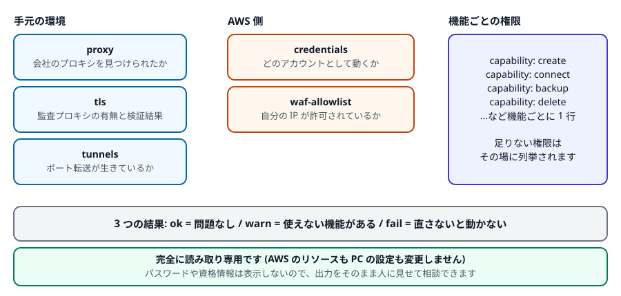

第 7 章 困ったときは
うまくいかないときは、原因を推測する前に nakama aws doctor を実行してください。手元の環境と AWS 側の状態をまとめて点検し、何が足りないかを教えてくれます。
1. まず doctor を実行する
PowerShell で実行
nakama aws doctor
出力はこのような形です (この例は、サインインの期限が切れている状態です)。
[ ok ] proxy direct connection (no proxy configured)
[ ok ] tls no TLS interception detected (public Amazon Trust Services chain)
[FAIL] credentials could not resolve AWS credentials: the aws login session has expired
The login session for this account has probably expired.
Recovery: run `nakama aws login` for this account again
-> run `nakama aws login` (or `aws login`), or select a saved profile with `nakama aws profile load <name>`
[skip] waf-allowlist skipped: no AWS credentials
[skip] capabilities skipped: no AWS credentials
[ ok ] tunnels no tunnels recorded
3 ok, 0 warn, 1 fail, 2 skipped2. 出力の読み方
| 印 | 意味 | どうするか |
|---|---|---|
[ ok ] | 問題なし | 何もしなくてよい |
[warn] | 動くが、一部の機能が使えない、または注意が必要 | その行の内容を読む。使いたい機能に関係なければ放置してよい |
[FAIL] | 直さないと動かない | -> で始まる行に対処方法が書かれています |
[skip] | 前提が満たされず点検できなかった | ふつうは credentials の [FAIL] が原因。それを直せば点検されます |
最後の行が集計です。fail が 1 つでもあると、コマンドの終了コードが 0 以外になります (自動化スクリプトを書く人向けの性質です。手で使うだけなら気にしなくて構いません)。
| 項目 | 点検内容 |
|---|---|
proxy | プロキシを見つけられたか、AWS に届くか (第 2 章) |
tls | 監査プロキシがあるか、OS の証明書リストで検証できたか |
credentials | どの AWS アカウント / ユーザーとして動くか、有効期限は切れていないか |
waf-allowlist | 自分の接続元 IP が許可リストに入っているか (第 3 章) |
capability: ... | 機能ごとに、必要な IAM 権限が揃っているか |
tunnels | このパソコンに記録されたポート転送が生きているか (第 5 章「ポート転送」) |
nakama aws doctor -o json同じ内容が JSON で出ます。ファイルに保存して添付する用途にも使えます。
3. 権限が足りないとき
サインインできていれば、機能ごとの権限の行が並びます。
[ ok ] capability: init all 32 actions allowed
[ ok ] capability: create all 24 actions allowed
[ ok ] capability: connect all 5 actions allowed
[warn] capability: backup missing: ec2:CreateSnapshot, ec2:DeleteSnapshot
-> grant the listed actions to use this feature (the simulation evaluates Resource "*"; resource-scoped allow policies can be reported as missing even though the real call succeeds)読み方は単純です。使いたい機能の行が ok なら使えます。 warn の行には、足りない IAM アクションがそのまま列挙されるので、その一覧を AWS の管理者に伝えれば権限を追加してもらえます。
権限を意図的に絞っている環境では、使わない機能が warn になるのは正常です。だから権限不足は fail ではなく warn です。
この点検は AWS のポリシーシミュレーション機能を使い、対象リソースを * (すべて) として評価します。そのため「特定のリソースにだけ許可する」書き方のポリシーでは、実際には使えるのに不足と表示されることがあります。実際にコマンドを実行してみるのが確実です。
また、この点検自体に iam:SimulatePrincipalPolicy という権限が必要です。無い場合は「確認できなかった」という warn になり、他の点検はそのまま実行されます。
4. 症状別の対処一覧
コマンドが動かない
| 症状 | 対処 |
|---|---|
用語 'nakama' は ... 認識されません |
PATH の設定後にウィンドウを開き直していません (第 1 章) |
| 期限切れと言われる | nakama aws login をもう一度実行します。サインインの有効期限は最長 12 時間です |
| 別のアカウントのリソースが見える | nakama aws doctor の credentials 行でアカウントを確認し、nakama aws profile load <名前> で切り替えます |
| 証明書のエラーが出る | 第 2 章。nakama 本体で出る場合は、Windows の証明書ストアに会社の CA が入っているかを IT 部門に確認してください |
ブラウザで開けない
| 症状 | 対処 |
|---|---|
| 403 Forbidden になる | 接続元 IP が許可されていません。nakama aws acl add を実行します。回線を変えた (テザリング、VPN の入切) 場合も IP が変わります。会社のネットワークでは、nakama とブラウザで外への出口 IP が違うことがあります。その場合はブラウザで https://checkip.amazonaws.com を開き、表示された IP を nakama aws acl add <その IP> で追加してください |
| ページが表示されない / タイムアウトする | 環境が停止していないか nakama aws list で確認し、nakama aws start <名前> で起動します。作成直後は CloudFront の反映待ちで数分かかることがあります |
| 自動ログインされず、パスワードを求められる | nakama aws info <名前> --show-password で表示して入力します。自動ログインができない環境では、その理由が表示されます |
open がエラーで、ssh や connect を案内される |
その環境は --bare で作られています (第 4 章「軽量ボックス」) |
ターミナルや ssh でつながらない
| 症状 | 対処 |
|---|---|
connect だけがつながらない (他のコマンドは動く) |
会社のプロキシが WebSocket を遮断している可能性があります (第 2 章「WebSocket が遮断されている場合」)。プロキシ管理者に許可を依頼してください |
| 権限が無いと言われる | doctor の capability: connect 行を確認します。ssm:StartSession などが必要です |
| 環境が起動しているのにつながらない | 起動直後は環境側の準備 (SSM エージェントの起動) に 1〜2 分かかります。少し待ってやり直してください |
ssh nakama-dev01 が Could not resolve hostname になる |
~/.ssh/config への Include 行の追加ができていません。Include は他の Host 設定より前に書いてください (第 5 章「手元の VS Code から使う」) |
| ssh で鍵を拒否される | nakama aws ssh setup <名前> を実行して公開鍵を登録します。鍵が無い場合は先に ssh-keygen -t ed25519 で作成してください |
| 切断が多い | connect / tunnel は keepalive の間隔を短くできます (第 2 章「切断が多いときの設定」)。ssh の場合は ~/.ssh/config に ServerAliveInterval 30 を追加します |
ポート転送が動かない
| 症状 | 対処 |
|---|---|
status が dead |
多くの場合サインインの期限切れです。nakama aws login の後、nakama aws tunnel restart <名前> |
status が stale |
常駐プログラムが終了しています。nakama aws tunnel start でやり直してください (古い記録は自動で片付けられます) |
| localhost につないでも応答がない | 環境側でそのポートのサービスが動いているか確認します。nakama aws tunnel suggest <名前> で待ち受け中のポートを調べられます |
| 手元のポートが使用中と言われる | 別のソフトがそのポートを使っています。-L 13000:3000 のように手元側の番号を変えてください |
作成やセットアップが失敗する
| 症状 | 対処 |
|---|---|
create が権限エラーになる |
doctor の capability: create 行に、足りないアクションが列挙されます。それを管理者に伝えてください |
| 名前を拒否される | 小文字英数とハイフンのみ、2〜32 文字、予約語 (start/stop/status/restart/suggest) は不可 (第 4 章「名前のルール」) |
セットアップ (--setup など) が失敗した |
サーバー自体は作成できています。ログを確認して再実行します:nakama aws connect <名前> sudo tail -n 50 /var/log/nakama-provision.lognakama aws setup rerun <名前> --setup .\setup.sh |
init が途中で失敗した |
もう一度 nakama aws init を実行してください (冪等なので、できているところは飛ばされます) |
5. 人に相談するとき
次の 2 つを添えると、状況が正確に伝わります。
nakama version
nakama aws doctor -o jsondoctor はパスワード・認証情報・トークンを出力しません。安心してそのまま貼り付けられます (アカウント ID とユーザー名は含まれるので、社外に出す場合はその点だけ確認してください)。
より詳しい記録が必要な場合は -v を付けると詳細ログが出ます。
nakama aws -v list
nakama aws -v connect dev01connect はインスタンス名より後ろに書いたものをすべて「環境側で実行するコマンド」として送ります。nakama aws connect dev01 -v と書くと、-v は nakama のオプションではなく環境側で実行されようとして失敗します。nakama aws -v connect dev01 のように前に置いてください。--tty や --retry も同じです。